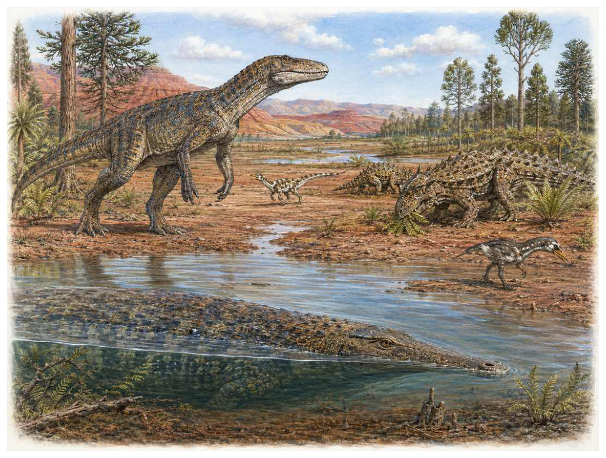
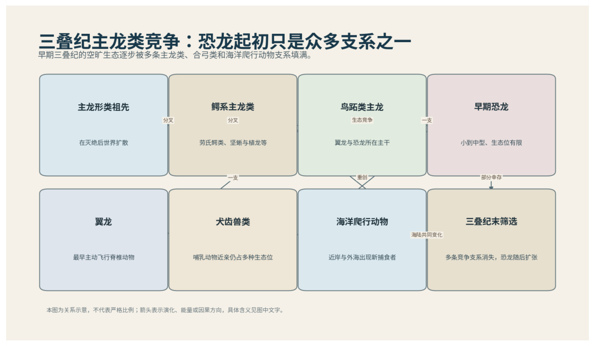

第11篇 · 三叠纪：废墟上的新生态系统 · 第 36 章
主龙类竞赛：鳄形线、植龙、坚蜥与恐龙近亲
本篇主题:三叠纪：废墟上的新生态系统
幸存者与新生主龙类在不稳定环境中争夺空出的生态位。

本章科学复原配图 （用于呈现结构与生态关系, 不替代化石照片、测量数据与系统发育证据。）
我们来到中晚三叠世，约2.42亿至2.01亿年前。最值得注意的不是“谁最强”，而是谁能把当时有限的能量转成更多存活后代。主龙类分为鸟跖类一侧和伪鳄类一侧。伪鳄类并不等于现代鳄鱼，它们在三叠纪演化出直立奔跑捕食者、装甲植食坚蜥、半水生植龙和多种小型敏捷形态；鸟跖类则包括翼龙、恐龙及其近亲。恐龙早期的竞争环境中，很多生态位由其他主龙类占据，因此恐龙崛起不能归因于一项‘先进设计’。
进入这个时代
生态系统的真实声音不是巨兽咆哮，而是持续的摄食、分解、搬运和繁殖。每一具尸体、每一层落叶和每一次沉积扰动都会重新分配资源。干湿季交替的泛滥平原上，装甲坚蜥低头取食根茎，植龙在河道伏击，劳氏鳄类以高肩直立姿势追逐猎物，小型恐龙近亲在边缘快速奔跑。仅凭牙齿或零散骨片很容易把这些动物误认成恐龙，踝关节和骨盆才更能揭示亲缘。
在“主龙类竞赛：鳄形线、植龙、坚蜥与恐龙近亲”所覆盖的时间里，不能把地理与气候当作固定背景。海陆位置、海平面、河流或植被结构会改变资源可达性，同一性状在不同地区可能得到完全相反的选择结果。
以主龙类竞赛：鳄形线、植龙、坚蜥与恐龙近亲为例，身体结构总有材料和发育成本。硬壳提高防护却使生长和运动更昂贵，长颈扩大取食范围却增加支撑与供血问题，高代谢提高持续活动也提高食物需求。所谓成功设计从来是特定环境中的权衡。在本章中，这一约束具体落在“相似捕食生态位在不同主龙支系中产生趋同体型”这条关系上。
再从中晚三叠世，约2.42亿至2.01亿年前的时间尺度看，化石记录偏爱硬组织、快速埋藏和容易出露的岩层。一次“首次出现”通常只是目前所知的最早记录，一次“突然消失”也需要排除保存窗口关闭。年代、形态和环境证据必须一起解释。 它与“鳄式踝与鸟式踝的不同路线”共同决定了后续变化可以沿哪些路径发生。

图 36-1 三叠纪主龙类竞争：恐龙只是众多支系之一。
生态系统如何运转
“相似捕食生态位在不同主龙支系中产生趋同体型”还会改变可利用空间。一个支系若能进入新的水深、植被高度或沉积层，竞争会暂时减弱；随后追随者、捕食者和寄生者又会把新空间变成新的互动网络。
围绕“相似捕食生态位在不同主龙支系中产生趋同体型”，从演化树看，相似关系可能在远亲中反复出现。功能相近不必意味着近缘，而同一祖先结构也可能被后代改作完全不同的用途；生态解释必须与系统发育互相校验。 对主龙类竞赛：鳄形线、植龙、坚蜥与恐龙近亲而言，这一后果还会与“直立姿势降低躯干摆动并改善步长”相互放大或抵消。
把“直立姿势降低躯干摆动并改善步长”放进食物网，可以看到它不是孤立行为。它会影响种群密度、栖息地使用和尸体进入分解链的速度，并把后果传给并未直接参与互动的物种。
围绕“直立姿势降低躯干摆动并改善步长”，当环境快速越过生理阈值时，原有互动甚至来不及通过适应重新平衡。此时灭绝的选择性会更多取决于分布、食物来源和繁殖速度，而不是平时竞争中的相对强弱。 对主龙类竞赛：鳄形线、植龙、坚蜥与恐龙近亲而言，这一后果还会与“装甲、喙嘴和半水生生活分散资源竞争”相互放大或抵消。
理解“装甲、喙嘴和半水生生活分散资源竞争”需要区分个体事件与长期压力。偶然一次捕食只改变个体命运，持续数千代的稳定关系才可能推动牙齿、外壳、感觉器官或生活史发生方向性变化。
围绕“装甲、喙嘴和半水生生活分散资源竞争”，这种关系没有永恒赢家。收益随密度和环境改变：防御越常见，攻击专门化的价值越高；资源越稀少，维持昂贵结构的代价越大。化石记录中的扩张与衰退，常是这种动态平衡被外部事件打破的结果。对主龙类竞赛：鳄形线、植龙、坚蜥与恐龙近亲而言，这一后果还会与“相似捕食生态位在不同主龙支系中产生趋同体型”相互放大或抵消。
关键演化创新
在“主龙类竞赛：鳄形线、植龙、坚蜥与恐龙近亲”中，围绕“鳄式踝与鸟式踝的不同路线”，“鳄式踝与鸟式踝的不同路线”一旦出现，还会改变其他物种的环境。新的捕食方式、取食高度或繁殖场所会制造选择压力，促使整个群落而不只是发明者发生响应。 它首先需要在中晚三叠世，约2.42亿至2.01亿年前的生态条件下产生可测量收益。
就“鳄式踝与鸟式踝的不同路线”而言，化石能较可靠地记录硬组织形态，却很少直接保留基因调控与短时行为。因此结构出现通常可信，最初用途和选择路径则应按证据标为主流解释或合理推测。 本章把它与“直立四足和两足步态”并列，是为了显示复杂性状往往依赖多部分协同。
在“主龙类竞赛：鳄形线、植龙、坚蜥与恐龙近亲”中，围绕“直立四足和两足步态”，“直立四足和两足步态”没有把生物推向更高级层级，而是重新划分可利用资源。它让某些水层、食物尺寸、活动时间或繁殖地点变得可行，同时也带来能量、材料和发育控制成本。 它首先需要在中晚三叠世，约2.42亿至2.01亿年前的生态条件下产生可测量收益。
就“直立四足和两足步态”而言，其宏观影响往往滞后于结构起源。一个创新可以先在小型、稀少支系中存在数百万年，直到环境变化或竞争者灭绝后才迅速扩张；“出现”和“成为主导”是两个不同事件。 本章把它与“主龙呼吸系统的早期演化”并列，是为了显示复杂性状往往依赖多部分协同。
在“主龙类竞赛：鳄形线、植龙、坚蜥与恐龙近亲”中，围绕“主龙呼吸系统的早期演化”，“主龙呼吸系统的早期演化”一旦出现，还会改变其他物种的环境。新的捕食方式、取食高度或繁殖场所会制造选择压力，促使整个群落而不只是发明者发生响应。 它首先需要在中晚三叠世，约2.42亿至2.01亿年前的生态条件下产生可测量收益。
就“主龙呼吸系统的早期演化”而言，这也提醒我们不要寻找单一关键基因。复杂性状由多个组织和调控网络协调，改变任何一环都可能产生不同结果，演化路径因此呈树状而非直线。 本章把它与“鳄式踝与鸟式踝的不同路线”并列，是为了显示复杂性状往往依赖多部分协同。
生命群像：把物种放回生态网络
波斯特鳄（Postosuchus kirkpatricki）
认识波斯特鳄（Postosuchus kirkpatricki）要先放弃静态骨架印象。它生活在晚三叠世，约约4至6米，日常任务是作为大型陆地捕食伪鳄类维持能量与繁殖。高位髋关节、深头骨和强壮后肢使其具直立步态只是这一整套生活史中最容易化石化的部分。
对波斯特鳄而言，这种生活方式还会反向塑造环境。摄食改变植物或猎物结构，足迹和掘穴改变沉积，尸体和排泄物把营养集中到局部。生态位不是它进入的固定房间，而是它与其他生物共同建造并持续修改的关系网络。 这使“高位髋关节、深头骨和强壮后肢使其具直立步态”不能脱离其大型陆地捕食伪鳄类角色来理解。
我们之所以能够作出上述判断，主要因为骨架显示主要四足运动，是否偶尔两足站立仍有生物力学争论。单一结构通常有多种功能解释，所以还要查看磨损、病理、肌肉附着、沉积环境和近缘比较。计算模型能排除不可能姿势，却不能自动恢复没有保存的软组织。
由波斯特鳄这个案例看，面对仍有争议的细节，负责任的复原不是停止讲述，而是标注证据等级。形态、年代和亲缘可较确定，具体姿势、叫声、求偶和群猎则按材料降级；新标本会在这些边界内继续改写认识。 它在晚三叠世留下的记录，因此同时是第36章所讨论的形态史和生态史的一部分。
迅猛鳄（Effigia okeeffeae）
迅猛鳄（Effigia okeeffeae）生活在晚三叠世，已知体型约为约2米。它在群落中的角色可概括为喙嘴、可能杂食或植食的伪鳄类。最值得观察的结构是长颈、轻头和两足姿势与后来的似鸟恐龙趋同。这些结构不是为了后来时代而准备，而是在当时直接影响摄食、运动、防御或繁殖。
对迅猛鳄而言，相似环境可能让远亲出现相近轮廓，但内部结构会保留祖先限制。比较它与现代类比时，应只借用可检验的功能，不把现代动物的行为、社会制度或代谢水平整套复制到古生物身上。 这使“长颈、轻头和两足姿势与后来的似鸟恐龙趋同”不能脱离其喙嘴、可能杂食或植食的伪鳄类角色来理解。
其复原依赖踝骨和头骨明确其属鳄系主龙，展示外形不能单独判断亲缘。年代和保存形态通常属于较强证据，体重、速度、颜色和社会行为则需要额外假设。书中把这些层次拆开，是为了让读者知道哪些可视为事实，哪些仍应等待更多材料。
由迅猛鳄这个案例看，它不是祖先链条上必须跨过的一格。演化树中同时存在许多近缘支系，只有少数留下后代；旁支化石同样关键，因为它们显示某组性状出现的顺序和可行范围。 它在晚三叠世留下的记录，因此同时是第36章所讨论的形态史和生态史的一部分。
坚蜥（Desmatosuchus spurensis）
在这一章的生命群像里，坚蜥（Desmatosuchus spurensis）不能只当作图鉴名称。它出现于晚三叠世，体型大约约4至5米，主要生活方式是装甲植食或杂食主龙类；宽体、背甲和肩部巨刺保护身体并可能用于展示则说明身体怎样围绕这一生活方式进行组合。
对坚蜥而言，它既可能是捕食者、植食者或工程者，也同时是其他生物的猎物、竞争者和分解资源。一次取食只是一瞬，长期生态影响来自成千上万个体反复搬运营养、改变植被或扰动沉积物。体型越大，这种工程效应通常越明显，但恢复速度也常越慢。 这使“宽体、背甲和肩部巨刺保护身体并可能用于展示”不能脱离其装甲植食或杂食主龙类角色来理解。
科学家并未直接看见它生活，依据是牙齿和吻部支持掘取或低位取食，巨刺性选择功能缺少直接证据。现代类比可以帮助提出可检验模型，却不能取代化石；越具体的短时行为，越需要痕迹、内容物或重复病理等直接线索。
由坚蜥这个案例看，这个案例还提醒我们，亲缘和生态角色是两件事。近亲可以因资源分化而外形迥异，远亲也能因相似压力而趋同。把它放在演化树和食物网两个坐标中，才不会误写成线性进步。 它在晚三叠世留下的记录，因此同时是第36章所讨论的形态史和生态史的一部分。
植龙（Smilosuchus gregorii）
从外形看，植龙（Smilosuchus gregorii）最容易被记住的是长吻、背部骨板和眼鼻位置与鳄类趋同，鼻孔位于头顶靠后。它生活在晚三叠世，大小约约5至7米，承担河流与湖泊伏击捕食者这一生态功能。把年代、体型和功能放在一起，才能避免把奇特形态当成无意义装饰。
对植龙而言，成年体型往往主导复原，但幼体可能使用完全不同的食物和栖息地。若成长阶段跨越多个生态位，种群就同时依赖多套环境；其中任一环节中断都可能导致长期衰退。化石骨床的年龄结构因此比单具最大标本更能说明生态。 这使“长吻、背部骨板和眼鼻位置与鳄类趋同，鼻孔位于头顶靠后”不能脱离其河流与湖泊伏击捕食者角色来理解。
证据核心是头骨和沉积环境支持半水生；四肢姿势与现代鳄不同。化石记录更擅长回答“结构是什么”，较难回答“每天怎样行动”。足迹、胃内容物、咬痕或胚胎若存在，会显著缩小推测范围；若只有零散骨骼，行为叙述就必须更克制。
由植龙这个案例看，它所代表的身体方案后来可能消失，也可能被远亲以不同材料重新发明。生命史因此既有可重复的功能解，也有不可复制的谱系路径。两者结合，才解释现代生物为何既熟悉又偶然。 它在晚三叠世留下的记录，因此同时是第36章所讨论的形态史和生态史的一部分。
西里龙（Silesaurus opolensis）
西里龙（Silesaurus opolensis）是晚三叠世的一名真实生态成员，而不是通往后代的抽象过渡。它约有约2.3米，以轻型植食或杂食恐龙形类的方式获取资源；喙样下颌、长肢和接近恐龙的骨盆特征反映了其祖先历史与局部选择压力共同留下的结果。
对西里龙而言，这种生活方式还会反向塑造环境。摄食改变植物或猎物结构，足迹和掘穴改变沉积，尸体和排泄物把营养集中到局部。生态位不是它进入的固定房间，而是它与其他生物共同建造并持续修改的关系网络。 这使“喙样下颌、长肢和接近恐龙的骨盆特征”不能脱离其轻型植食或杂食恐龙形类角色来理解。
判断它的生活方式时，研究者首先使用其属于恐龙外近亲还是鸟臀类早期成员仍有系统发育争论。随后会检验替代解释：同样的牙是否也能处理其他食物，同样的骨骼比例是否由年龄造成，同一骨层是否来自群体生活还是灾难性聚集。排除过程比贴标签更重要。
由西里龙这个案例看，过去的复原常受完整现代动物模板影响，新材料则迫使研究者接受更陌生的身体比例或生活方式。最稳妥的表达是保留估计区间，并明确哪些软组织、颜色和社会行为仍属合理推测。 它在晚三叠世留下的记录，因此同时是第36章所讨论的形态史和生态史的一部分。
因果链：环境、生态与性状
在中晚三叠世，约2.42亿至2.01亿年前，身体不是若干部件的简单相加。“鳄式踝与鸟式踝的不同路线”只有与“主龙呼吸系统的早期演化”在供能、控制和发育上兼容，才可能稳定遗传；局部性能提高若超过呼吸、循环或支撑能力，整体反而失效。坚蜥的宽体、背甲和肩部巨刺保护身体并可能用于展示因此应放进完整身体比例中解释，而不是把某一器官单独夸大。生物力学模型可以估算受力和运动范围，组织学能限制生长速度，近缘比较能提示同源关系；三者相互校验，才有可能从静态化石走向一个能够活着完成日常活动的动物或植物。
种群层面的成功还要考虑波动，而不仅是平均状态。在资源丰富年份，“直立四足和两足步态”带来的高性能可能迅速增加个体数；在低谷年份，维持该结构的成本又会放大死亡。若迅猛鳄拥有较广食谱或可迁移，便可能跨过低谷；若其长颈、轻头和两足姿势与后来的似鸟恐龙趋同高度依赖单一环境，恢复就更困难。化石群落中的丰度峰值、体型变化和地理收缩能为这种“繁荣—压力—恢复”循环提供线索，但必须与采样偏差区分。对中晚三叠世，约2.42亿至2.01亿年前的任何稳态描述，都只是长期波动中被岩层保存的一小段。
本章的因果链最终落在繁殖上。“直立姿势降低躯干摆动并改善步长”改变个体获得资源和避开风险的方式，“鳄式踝与鸟式踝的不同路线”改变身体能做什么，但只有这些差异持续影响配子、胚胎、幼体和成体留下后代的概率，演化频率才会跨世代变化。波斯特鳄和迅猛鳄的化石常让人关注尺寸或武器，然而巢、蛋、芽孢、孢粉、幼体壳和成长线往往更接近选择真正发生的位置。理解主龙类竞赛：鳄形线、植龙、坚蜥与恐龙近亲，因此要把最壮观的成年结构重新接回完整生活史。
把“鳄式踝与鸟式踝的不同路线”拆成成本与收益，可以避免把演化创新写成无条件升级。它可能扩大摄食、运动或繁殖的边界，却要付出组织材料、发育协调和日常维持的代价；“直立四足和两足步态”又会改变这笔账在不同生命阶段的分配。对波斯特鳄而言，高位髋关节、深头骨和强壮后肢使其具直立步态在成年阶段或许十分醒目，但种群能否延续仍取决于幼体是否能找到食物、是否有安全的生长场所以及环境波动后是否保留繁殖者。化石往往偏爱成年硬组织，因此书写中晚三叠世，约2.42亿至2.01亿年前时必须主动补上这些不易保存却决定长期命运的环节。
从时间顺序看，“鳄式踝与鸟式踝的不同路线”的最早记录不等于它立即改写生态系统。结构可能先以小幅变异出现在稀少支系中，经历很长的试验期，直到“相似捕食生态位在不同主龙支系中产生趋同体型”所代表的资源条件或竞争格局改变，才出现可见的辐射。反过来，一个支系在化石记录中突然繁盛，也不证明关键结构刚刚产生；保存窗口打开、地理扩散或生态位释放都能造成类似图景。因此讨论中晚三叠世，约2.42亿至2.01亿年前的创新时，本章把“首次出现”“功能完善”“多样化”和“成为生态主导”分成四个问题，避免用一个日期替代整段历史。
时代横截面：个体、种群与证据
证据强度也应逐句区分。踝骨、骨盆和股骨头判断主龙分支若直接记录形态或行为痕迹，可把某些可能性排除；足迹群显示体型和步态分布若来自模型或现代类比，则通常提供范围而非唯一答案。对坚蜥的宽体、背甲和肩部巨刺保护身体并可能用于展示，我们也许能高可信地描述结构，却只能以主流解释讨论功能，以合理推测讨论日常行为。把层级写出来不会削弱故事，反而让读者知道未来新发现最可能改动哪一部分。
把结构看作模块，可以解释为什么过渡类型常显得“新旧并存”。波斯特鳄的高位髋关节、深头骨和强壮后肢使其具直立步态可能已经接近后来状态，而呼吸、繁殖或运动的其他部分仍保留祖征；迅猛鳄可能采用另一种组合达到相似功能。演化不要求所有部件同步改变，只要求每个阶段的完整个体能够生活和繁殖。正因如此，真实谱系会产生旁支、回退和多次独立试验，而不是教科书式直梯。
再把坚蜥加入横截面，群落关系会从两者比较变成网络。它作为装甲植食或杂食主龙类，通过宽体、背甲和肩部巨刺保护身体并可能用于展示连接资源与其他消费者；其数量变化可能同时影响波斯特鳄和迅猛鳄，甚至改变分解链和营养循环。这样的间接效应很少能由一具骨架直接证明，却可以从物种共现、丰度、痕迹化石和环境指标中受到约束。主龙类竞赛：鳄形线、植龙、坚蜥与恐龙近亲的生态复原因此需要群落数据，而不只是著名标本的精细解剖。
地理同样会拆散看似整齐的时代标签。中晚三叠世，约2.42亿至2.01亿年前并不是全球同时拥有同一种气候与群落：海盆深浅、纬度、山脉、河流和大陆隔离会让波斯特鳄、迅猛鳄与坚蜥的分布错开。一个支系可能在某地区衰退、在另一地区成为避难所；后来扩散又会造成化石记录中的“重新出现”。因此本章的代表物种用于说明机制，而不意味着它们都在同一地点同一时刻相遇。
“谁取代了谁”常把复杂过程压成单线叙事。在主龙类竞赛：鳄形线、植龙、坚蜥与恐龙近亲中，即使迅猛鳄在某层位后减少、坚蜥随后增加，也可能是二者分别响应气候或栖息地，而不是直接竞争导致淘汰。需要检查时间误差、地理重叠和资源相似度；只有三者都支持，替代关系才更可信。更多时候，生态系统通过功能重新组合过渡，旧支系与新支系会长期并存。
科学家为什么这样判断
“踝骨、骨盆和股骨头判断主龙分支”最有价值的地方，是它能排除某些流行复原。关节不允许的姿势、承重无法支持的速度、与沉积环境冲突的生活方式，都可以被证据淘汰；剩余模型仍可能不止一个。
“足迹群显示体型和步态分布”提供的是一类约束而非完整录像。它可能精确记录某一瞬间，却未必代表全年或整个物种；也可能反映长期平均，却无法指出单次行为。把不同时间尺度的证据组合，才能重建生态过程。
“骨气腔与呼吸相关结构推断气囊系统”还需要与年代学绑定。只有事件先后关系可靠，才能讨论因果；若环境变化和生物响应的误差范围大量重叠，就应表述为相关或可能机制，而不是宣布已经证明。
在“主龙类竞赛：鳄形线、植龙、坚蜥与恐龙近亲”这一问题上，把上述方法合在一起，研究者才能从残缺材料走向受约束的复原。任何一条证据都可能受到成岩、污染、样本量或现代类比的限制；结论越具体，越需要多条独立证据指向同一方向，并与中晚三叠世，约2.42亿至2.01亿年前的地层背景相容。
过去的图景与今天的证据
植龙外形像鳄却不是鳄类，其外鼻孔位于眼前靠后；劳氏鳄类也不是恐龙。传统叙事常把三叠纪生态重画成恐龙逐步击败‘低等爬行动物’，而最新研究更强调气候脉冲、地域差异和三叠纪末灭绝的选择性清除。
围绕“主龙类竞赛：鳄形线、植龙、坚蜥与恐龙近亲”，当多种机制可以并存时，不应为了故事简洁强迫选择唯一原因。氧气、温度、营养、捕食和地理隔离常形成反馈，研究目标是约束各环节的时间和强度，而不是寻找一句万能口号。
对中晚三叠世，约2.42亿至2.01亿年前的材料而言，数据存在范围时，本书使用约数而非虚假精确值。体型会因缺失骨骼和软组织密度变化，年代会因定年误差调整，灭绝比例会因分类和采样校正改变；一个区间往往比醒目的单值更科学。
跨尺度观察
证据等级：地层年代和硬组织形态通常最强，食性若有多种独立线索可达主流解释，颜色、群居、求偶和叫声则常停留在合理推测。把等级写清并不会破坏画面，反而让读者知道想象可以走到哪里。在“主龙类竞赛：鳄形线、植龙、坚蜥与恐龙近亲”中，这一尺度具体连接了“相似捕食生态位在不同主龙支系中产生趋同体型”与“鳄式踝与鸟式踝的不同路线”，因而不能只从单个成年标本判断。
幼体视角：幼体常比成体更小、食物不同、耐受范围更窄。一个支系可在成年阶段拥有强大防御，却因卵、胚胎或幼体栖息地消失而灭绝。巢、蛋、成长线和年龄结构因此是解释繁殖策略的重要证据。 在“主龙类竞赛：鳄形线、植龙、坚蜥与恐龙近亲”中，这一尺度具体连接了“直立姿势降低躯干摆动并改善步长”与“直立四足和两足步态”，因而不能只从单个成年标本判断。
生态工程：生物不是被动放在环境里。根系、礁体、洞穴、粪便和迁徙都会改变水流、土壤、养分与栖息地结构。工程效应一旦扩散，后续物种面对的环境已经是前一批生命共同建造的。 在“主龙类竞赛：鳄形线、植龙、坚蜥与恐龙近亲”中，这一尺度具体连接了“装甲、喙嘴和半水生生活分散资源竞争”与“主龙呼吸系统的早期演化”，因而不能只从单个成年标本判断。
通向下一个时代
从本章走向下一阶段时，需要保留的不是一串物种名，而是一个因果链：环境改变可用能量与栖息地，生态关系筛选性状，性状又反过来改造环境。恐龙真正出现时既不巨大也不占优势。下一章将追踪最早恐龙、翼龙与哺乳形类如何在同一世界中建立各自路线。
本章精选来源
- [R59] Nesbitt, S. J. The early evolution of archosaurs: relationships and the origin of major clades. Bulletin of the American Museum of Natural History 352, 1-292 (2011).
- [R60] Ezcurra, M. D. The phylogenetic relationships of basal archosauromorphs. PeerJ 4, e1778 (2016).
- [R61] Brusatte, S. L. et al. The origin and early radiation of dinosaurs. Earth-Science Reviews 101, 68-100 (2010).
- [R62] Whiteside, J. H. et al. Compound-specific carbon isotopes from Earth’s largest flood basalt eruptions directly linked to the end-Triassic mass extinction. Proceedings of the National Academy of Sciences 107, 6721-6725 (2010).
- [R63] Olsen, P. E. et al. Ascent of dinosaurs linked to an iridium anomaly at the Triassic-Jurassic boundary. Science 296, 1305-1307 (2002).